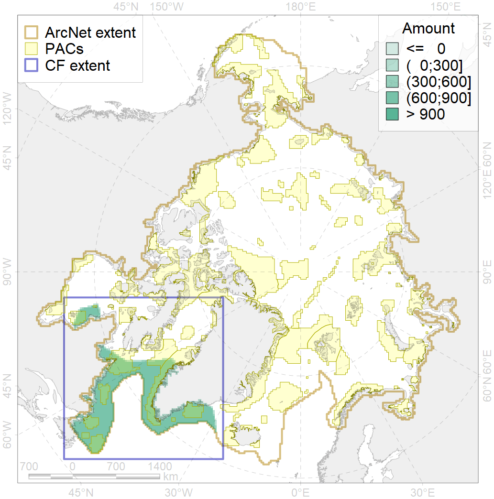
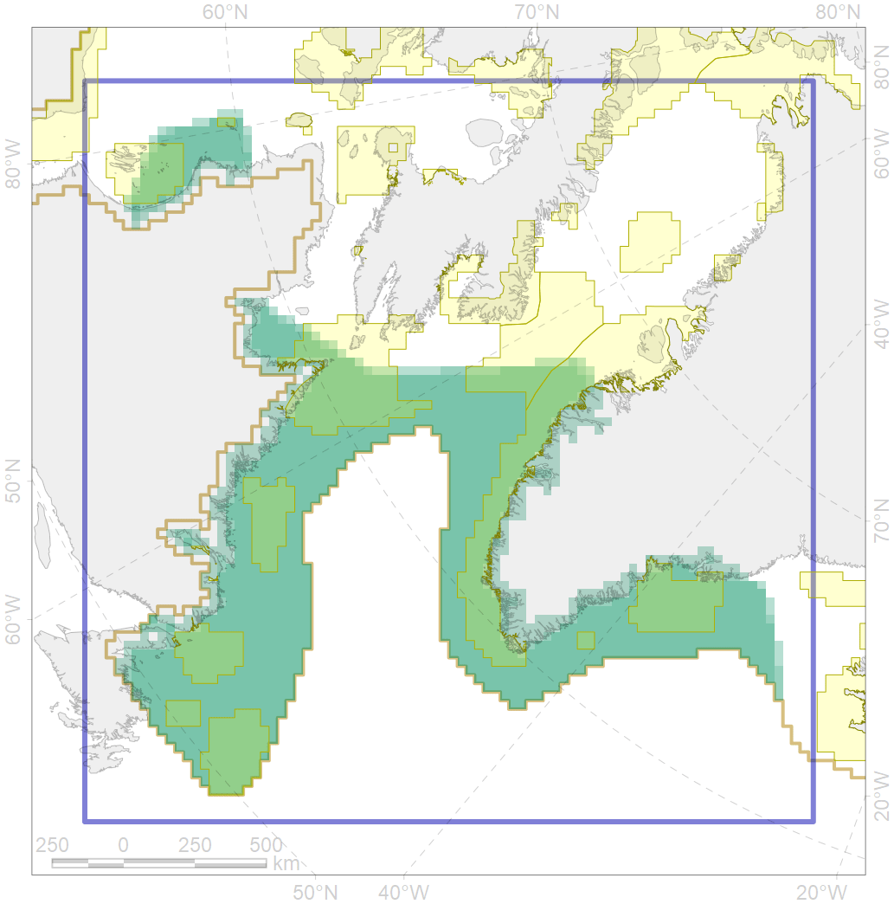

4028

| CF ID | 4028 |
| CF Name | Feeding/migration area of the Atlantic salmon (Salmo salar) American populations |
| Time Period | 1940s-2010s |
| Source(s) | Martynov, 2007; Coad Reist 2018 |
| Seasonality | May-October |
| Depth Horizon | 0-150 m |
| Methodology | Compiled from literature sources based on field observations |
| Author Name | N. Chernova |
| Notes | |
| Conservation Target Set in the Scenario | 0.12 |
| Conservation Target Achieved in the Scenario | 0.373 (Scenario: 311.1%) |
| PAC ID | Proportion in the PAC | Contribution to ArcNet Target Achievement | PAC’s Contribution to the Achieved Target |
|---|---|---|---|
| 42 | 4.7% | 35.0% | 11.2% |
| 43 | 0.3% | 2.1% | 0.7% |
| 44 | 9.5% | 72.8% | 23.4% |
| 45 | 1.9% | 15.5% | 5.0% |
| 71 | 2.1% | 16.4% | 5.3% |
| 72 | 0.1% | 1.0% | 0.3% |
| 76 | 7.2% | 55.8% | 17.9% |
| 77 | 3.2% | 24.0% | 7.7% |
| 78 | 0.0% | 0.3% | 0.1% |
| 79 | 3.1% | 20.3% | 6.5% |
| 80 | 0.9% | 6.0% | 1.9% |
| 81 | 4.3% | 32.1% | 10.3% |
| inner | 37.4% | 281.2% | 90.4% |
| outer | 62.6% | 29.8% | 9.6% |